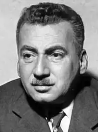

Амаду Жоржі (Amado, Jorge — 10.08.1912, m. Ільєус — 6.08.2001, Сальвадор де Байя) — бразильський письменник.Амаду народився в м. Ільєус (штат Байя) в родині дрібного плантатора. Його батько отримав декілька поранень під час заворушень проти землевласників. Саме він сприяв появі у майбутнього письменника зацікавленості в ідеалах комунізму. Ідеї збройної боротьби за соціальну рівність довго не полишали письменника. Проте у 2-ій пол. 50-х pp. Амаду розчарувався в комуністичних ідеях. "Я приношу більше користі як письменник, аніж як революціонер",— сказав він тоді одному бразильському журналісту.
Писати Амаду почав із 14 років. Він належав до північно-східної школи, яка презентувала один із різновидів соціально орієнтованої літератури. Під впливом її ідейних настанов Амаду написав перші романи — "Какао" ("Cacau", 1933), де відтворені гнітючі картини бідності, експлуатації дитячої праці і нелюдського існування батраків на плантаціях какао; "Піт"("Suor", 1934), який свого часу порівнювали з п'єсою Максима Горького "На дні" (в романі змальовано безрадісне життя "колишніх людей" — мешканців одного з будиночків передмістя Сальвадора).
У другій пол. 30-х років з'явився т. зв. "байський" цикл (від назви місцевості, де відбувається дія) романів Амаду — "Жубіаба" ("Jubiaba", 1935), в центрі якого — молодий негр Антоніо Балдуїно, людина без певної професії, гульвіса, колишній професійний боксер, вантажник, робітник плантацій какао, який проходить нелегку "школу життя" і стає прогресивним профспілковим лідером та зразковим сім'янином; "Мертве море"("Mar mono", 1936) — двоплановий роман, реально-побутова лінія якого змальовує становлення класової свідомості найбідніших верств бразильського суспільства (на прикладі рибалки Гуми), а легендарно-міфологічна зображує суперництво Лівії, дружини Гуми, з господаркою морських глибин Йеманжею, котра полонила і зробила своїм коханцем Гуму. Наступний роман — "Капітани піску" ("Capitals da areia", 1937) присвячений групі безпритульних підлітків на околицях Байї, котрі створили власну комуну і спільно долають важкі життєві випробовування. У 1937 p., після приходу до влади у Бразилії диктатури, Амаду кілька разів заарештовували за участь в діяльності Національно-визвольного альянсу. У тому ж році на міській площі Байї привселюдно були спалені його книги. З 1941 р. Амаду емігрував в Уругвай, де створив "трилогію про землю", до якої увійшли романи "Безкраї землі" ("Terras do sem fim", 1943) — про життя міста Ільєуса, де розгортається економічна боротьба за володіння плантаціями какао, "Сан-Жоржі дос Ільєус" ("Sao Jorge dos Ilheus", 1944), головна сюжетна лінія якого розгортається навколо боротьби між феодалами-полковниками й експортерами плодів какао, роман "Червона прорість"("Sttra. vermelha", 1946). Останній твір трилогії присвячений важкій долі селянства північно-східної Бразилії. У центрі зображення — історія сім'ї старої селянки Жукундіни та її трьох синів, один з яких став солдатом, другий — бандитом, а третій — революціонером. Після повернення у Бразилію в 1946 р. Амаду був обраний депутатом Національного конгресу, але з 1948 p., після заборони компартії, він знову змушений емігрувати. Чотири наступні роки письменник провів у мандрах країнами Західної Європи, Азії та Африки. Після повернення в 1952 р. на батьківщину він повністю перейшов на літературну роботу, став співцем рідного краю з його тропічною екзотикою та яскраво вираженим африканським елементом у культурі. Відбулася переорієнтація і в його літературних поглядах: тепер він менше уваги приділяв ідеологічним настановам і зосередився на власне художніх пошуках, пов'язаних з поетикою "магічного реалізму". Початок цих змін пов'язують з романом "Габрієла, гвоздика і кориця" ("Gabriela, cravo e canela", 1958). Твір, як стверджував Амаду, є "хронікою одного провінційного міста". На тлі протистояння колишнього всесильного полковника Бастуса і молодого підприємця, експортера какао Фалкана, Амаду створив привабливий образ юної мулатки Габрієли, відважної, життєрадісної, добродушної дівчини, котра уособлює найкращі риси бразильського народу. Тими самими художніми закономірностями позначені й подальші романи Амаду: "Ми пасли ніч" ("Os pastores da noite", 1964), "Донна Флор та два її чоловіки"("Dona Flor e seus dois maridos", 1969), "Крамниця дивовиж" ("Tenda dos milagres", 1969), "Тереза Батіста прагне жити спокійно"("Teresa Batista, cansadadeguerra", 1972), "Повернення блудної доньки" (1977), "Китель, сюртук, нічна сорочка" (1979), "Засада" ("Tocaia grande", 1984), у яких поєднуються елементи "міської" прози з фольклорно-магічним баченням світу, притаманним новому латиноамериканському роману. У 1951 р. Амаду був удостоєний Ленінської премії, в 1984 р. нагороджений орденом Почесного легіону (Франція). З 1963 р. Амаду постійно жив у передмісті Сальвадора, столиці штату Байя. До останніх днів він "писав" на механічній друкарській машинці, багато разів закреслюючи та переписуючи кожну фразу. У його заміському домі завжди були домашні тварини — мавпи, папуги, собаки та кішки. Автор книги, за сюжетом якої був знятий культовий для свого часу фільм "Генерали піщаних кар'єрів", давно хворів діабетом. У понеділок, 6 серпня 2001 року, близько 18 години вечора його привезли у відділення невідкладної допомоги однієї з лікарень Сальвадор де Байя. Через чотири години Амаду помер.